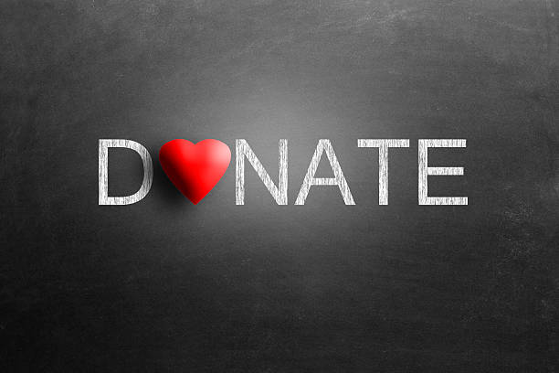
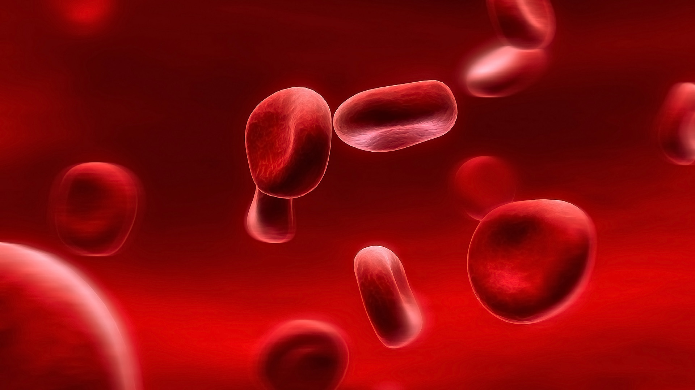
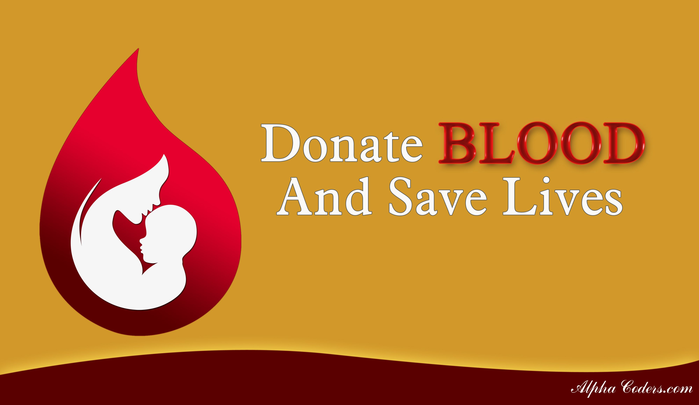

Introduction
Blood donation is a vital part of worldwide healthcare. It relates to blood transfusion as a life-sustaining and life-saving procedure as well as a form of therapeutic phlebotomy as a primary medical intervention. Over one hundred million units of blood are donated each year throughout the world.[1] This article will concisely discuss a short history of blood donation origin and purpose, blood testing, donor eligibility and selection, adverse effects of donation, blood donation as a primary medical intervention, and a brief discussion of pathogen reduction and inactivation for donated blood.
Anatomy and Physiology
Blood donation is most often performed by inserting a large bore needle (16G or 18G) into a peripheral vein, usually within the antecubital fossa. Veins on the dorsum of the hand or other prominent veins may be used in some individuals who do not have an otherwise easily accessible antecubital vein.
Indications
Blood donation for transfusion is a vital step in the management of many clinical problems, with the two primary indications being anemia and acute blood loss. Blood donation itself is also used to primarily treat a small subset of medical conditions. At the beginning of the 20th century, Karl Landsteiner identified ABO blood groups, at which time blood typing of individuals was only beginning to be adopted as a universally standard practice.
Contraindications
Contraindications to donating blood according to the AABB include:
"Anyone who has ever used needles to take drugs or any substance not prescribed by a clinician.
Men who have had sexual contact with other men in the past 12 months.
Anyone with a positive test for HIV.
Men and women who have ever engaged in sex for money.
Anyone who has had hepatitis since their eleventh birthday.
Anyone who has had babesiosis or Chagas disease.
Anyone who has taken Tegison for psoriasis.
Anyone who has risk factors for variant Creutzfeldt-Jakob disease (CJD) or who has a blood relative with the disease.
Anyone who has risk factors for CJD, including:
Anyone who spent three months or more in the United Kingdom from 1980 through 1996
Anyone who received a blood transfusion in the United Kingdom or France from 1980 to the present
Anyone who has spent five years in Europe from 1980 to the present."
Personnel
Most collection personnel involved in blood donation are certified phlebotomists. These personnel require a high school diploma and receive 1-2 months of classroom and hands-on training prior to becoming certified. Collection personnel may also be trained as LVNs, RNs, and EMTs, among others.
Preparation
In preparation for blood donation, donors should be well rested, eat a full meal, and drink plenty of non-alcoholic, non-caffeinated beverages. Donors should refrain from heavy lifting, drinking alcohol, and smoking for several hours after donation.
Technique
After the donor screening questionnaire is completed, the donor will be evaluated by a medical receptionist. This evaluation includes an assessment of vital signs (blood pressure, pulse, temperature), an arm check looking for needle tracks and signs of injury or trauma, and a peripheral finger stick to check blood hemoglobin levels. Following the screening, the donor will proceed to the donor floor for collection. The venipuncture site will be scrubbed with a cleaning solution (either iodine or chlorhexidine), and the needle will be inserted into a peripheral (antecubital) vein in a sterile fashion. The donor is continually monitored during collection, and the needle is removed and pressure applied to the wound once the appropriate blood volume has been collected (450 ml).